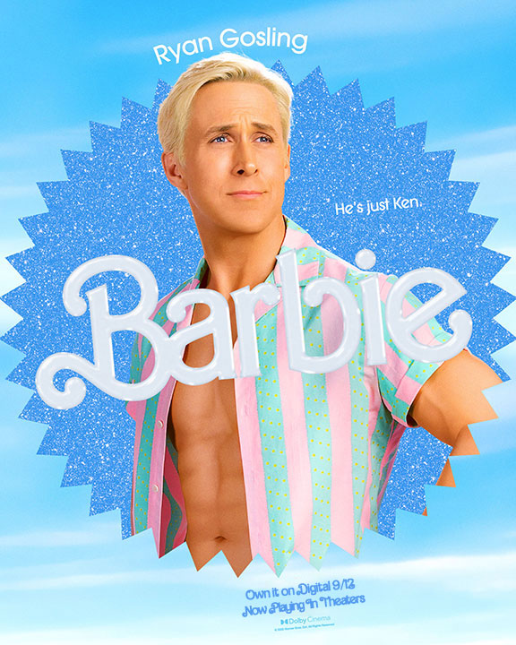
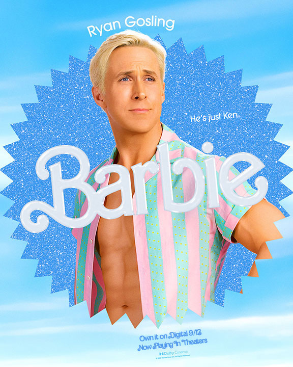

About Barbie
Barbie is a fashion doll created by Mattel, Inc. She is known for her fashionable outfits and accessories. The first-ever Barbie doll was introduced by the American toy company Mattel, Inc. in March 1959. The doll was named "Barbie" after Ruth Handler, one of the co-founders of Mattel, observed her daughter, Barbara, playing with paper dolls and imagining them as adult women. Ruth Handler envisioned a three-dimensional adult-like fashion doll for girls, and that idea led to the creation of Barbie. The original Barbie doll was 11.5 inches (29 cm) tall and had a mature, adult-like figure. She was dressed in a black-and-white striped swimsuit and came with accessories such as sunglasses, high-heeled shoes, and hoop earrings. The first Barbie doll was marketed as a teenage fashion model and quickly became a cultural icon and a popular toy for generations of children. Since the introduction of the first Barbie, the doll has undergone numerous changes in terms of design, outfits, careers, and diversity to reflect the evolving tastes and values of society. Barbie remains a well-known and beloved toy around the world.

 
